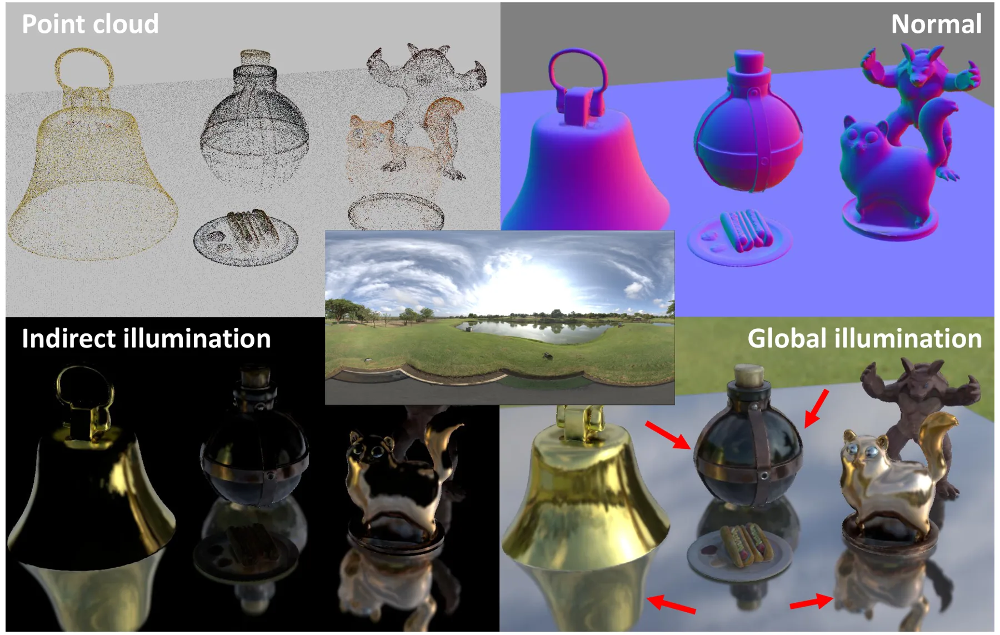
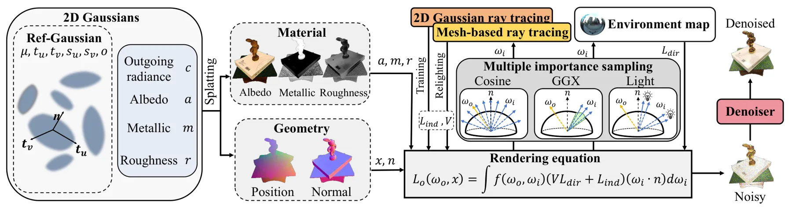
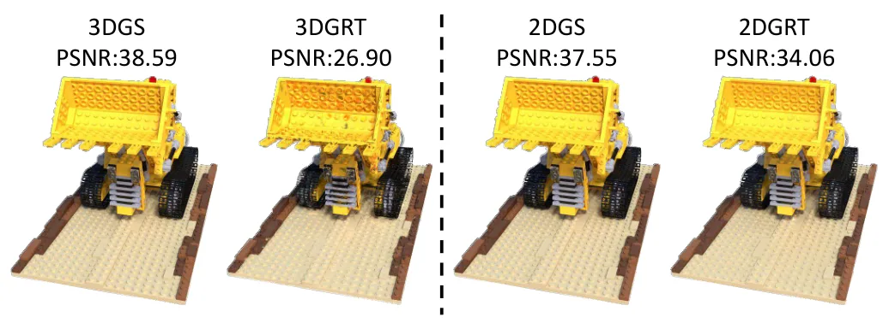

IRGS++：面向稳健高效逆渲染的互反射 Gaussian SplattingInter-Reflective Gaussian Splatting for Robust and Efficient Inverse Rendering
推进 3DGS 的材质—光照解耦和跨光照复用，对高保真三维重建有价值；并非 SLAM 方法，secondary rays、mesh query 依赖和真实复杂光照下的歧义仍需验证。
一句话工作总结
以可微二维 Gaussian ray tracing 补齐 visibility、indirect radiance 和 inter-reflection，使 3DGS 逆渲染更符合物理传输。
摘要
忠实的 inverse rendering 需要 visibility 与 indirect radiance 来解释 secondary illumination 和 inter-reflection，但面向 rasterization 的 Gaussian 表示通常不支持所需的 secondary-ray queries。IRGS++ 在 surface-oriented Gaussian primitives 上使用 differentiable 2D Gaussian ray tracing，即时查询 visibility 和 indirect radiance，并在 transport-aware optimization 中计算互反射传输的完整 rendering equation。为覆盖高光、镜面和金属材质，框架加入 metallic-aware material modeling 与 robust reflective initialization；multiple importance sampling 和 denoising 用于稳定有限采样渲染，mesh-based secondary-attribute queries 则降低新光照 relighting 成本。摘要报告其在低光泽和高光泽 benchmark 上改善 decomposition 与 relighting quality，并获得良好的质量—速度权衡。
Faithful inverse rendering requires visibility and indirect radiance to explain secondary illumination and inter-reflection, yet rasterization-oriented Gaussian representations do not naturally support the secondary-ray queries needed to recover them. We present IRGS++ (Inter-Reflective Gaussian Splatting), a unified robust and efficient Gaussian inverse rendering framework. During transport-aware optimization, IRGS++ employs differentiable 2D Gaussian ray tracing on surface-oriented Gaussian primitives to query visibility and indirect radiance on the fly and evaluate the full rendering equation for inter-reflective transport. This physical core makes Gaussian inverse rendering physically grounded beyond rasterized appearance modeling. To make this backbone useful beyond low-gloss dielectric scenes, the framework incorporates metallic-aware material modeling and robust reflective initialization for glossy, specular, and metallic materials. To make it practical, multiple importance sampling and denoising stabilize finite-sample rendering, while mesh-based secondary-attribute queries reduce the cost of relighting under novel illumination. Quantitative evaluations on low-gloss and glossy benchmarks show improved decomposition and relighting quality together with favorable quality--speed trade-offs under the reported configurations, while real-world studies illustrate plausible relighting under novel illumination.
中文解读摘录
- 作者：Chun Gu, Xiaofei Wei, Zixuan Zeng, Yuxuan Yao, Li Zhang
- 价值判断：把 3DGS 从 rasterized appearance model 推向更物理一致的 inverse rendering，对需要照明解耦、材质恢复或跨光照地图复用的三维重建系统有价值。
- 技术要点：在 surface-oriented Gaussians 上使用 differentiable 2D Gaussian ray tracing，即时查询 visibility 与 indirect radiance，并计算包含 inter-reflective transport 的完整 rendering equation；加入 metallic-aware material、reflective initialization、multiple importance sampling 与 denoising。
- 结果与边界：摘要报告 low-gloss/glossy benchmarks 上 decomposition、relighting 和 quality-speed trade-off 改善。需核查几何初始化依赖、secondary-ray 成本、mesh-based attribute query 是否破坏纯 Gaussian pipeline，以及复杂真实光照下材质—照明歧义。
- 链接：arXiv · PDF
图表/页面预览
{kind=link}

{kind=link}

{kind=link}
